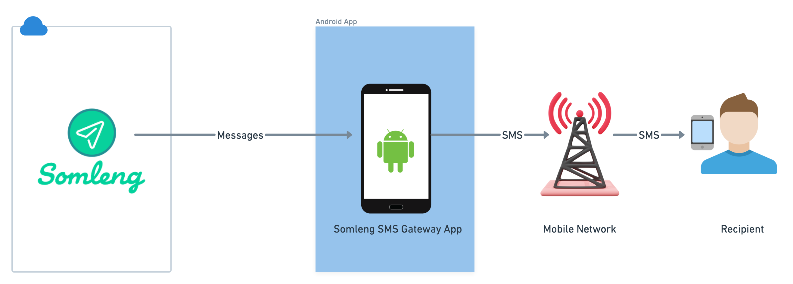
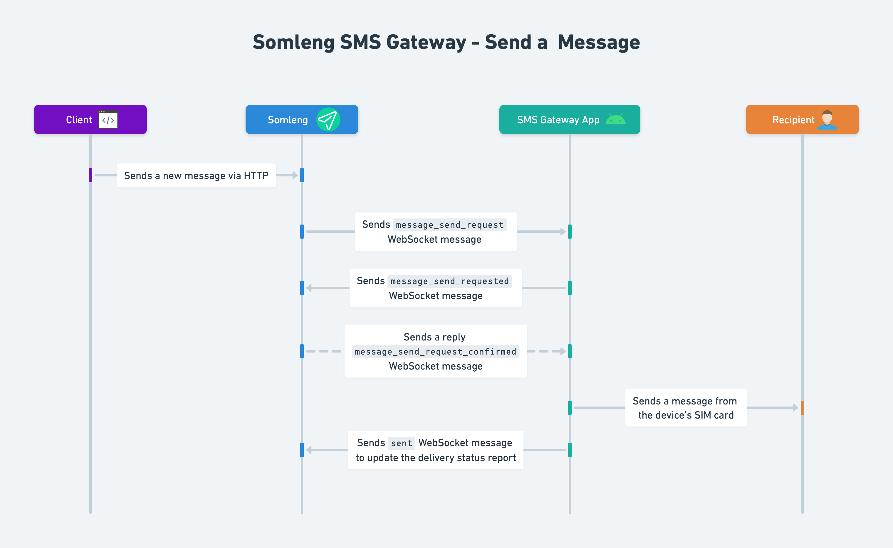
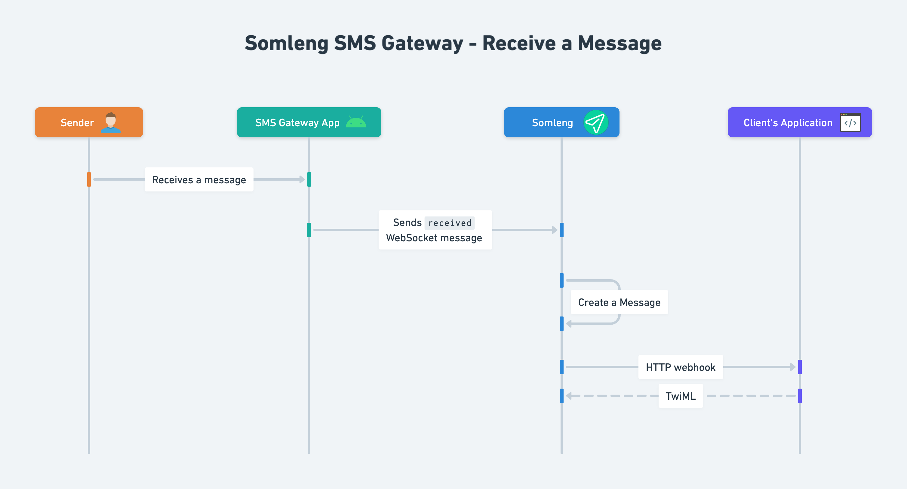

We're excited to announce the release of the Somleng SMS Gateway Android App, a lightweight, open-source Android application that allows you to send and receive SMS messages through Somleng—using the exact same API syntax as Twilio.
This new Android Gateway App gives organizations, developers, and operators a fast, affordable, and flexible way to use real mobile devices as SMS gateways. With nothing more than an Android phone and a SIM card, you can immediately begin sending and receiving SMS through Somleng's Twilio-compatible Messaging API.
➡️ GitHub repository:
https://github.com/somleng/sms-gateway-app
Why We Built the Android SMS Gateway App
Somleng has always focused on making early warning systems, IVR solutions, and messaging infrastructure accessible to everyone—especially where traditional telecom services may be limited or cost-prohibitive.
The new Android Gateway App was designed to address several common needs:
- A no-infrastructure SMS gateway: No servers, no Docker, no SMPP. Just install and go.
- Support for real-world deployments: Send real SMS via the mobile network attached to your SIM.
- Twilio drop-in compatibility: Use familiar Twilio API calls without modifying your code.
- Open-source flexibility: Extend, fork, or integrate it however you need.
And most importantly:
You can connect multiple Android devices to the same gateway on Somleng, providing redundancy,
load
balancing,
and failover.
How the Android SMS Gateway App Works
The app transforms any Android phone into an SMS gateway that communicates with Somleng using your Device Token. Once connected, Somleng routes outgoing and incoming messages through the device.
Sending SMS
When your application sends a message using Somleng's Twilio-compatible API, Somleng assigns the message to a connected Android device. The device then delivers the SMS via the mobile network.
Receiving SMS
Incoming SMS messages received by the device's SIM card are automatically forwarded to Somleng, which then relays them to your webhook using Twilio-compatible parameters.
Example: Sending an SMS Using Somleng (Twilio-Compatible Syntax)
Here's a simple example using cURL to send an SMS:
curl -X POST https://api.somleng.org/2010-04-01/Accounts/<YOUR_ACCOUNT_SID>/Messages.json \
-u <YOUR_ACCOUNT_SID>:<YOUR_AUTH_TOKEN> \
-d "To=+85512345678" \
-d "From=+85500000001" \
-d "Body=Hello from Somleng via the Android SMS Gateway!"
If you've used Twilio before, this should look identical—because it is. Somleng's API is fully Twilio-compatible.
Redundancy, Load Balancing & Failover With Multiple Devices
The ability to connect multiple Android devices to the same SMS Gateway is one of Somleng's most powerful features. This makes your SMS delivery more reliable and scalable.
- Redundancy: If one device loses signal or power, another device takes over automatically.
- Load Balancing: Traffic can be spread across multiple devices for higher throughput.
- Failover: Messages are not lost if a device becomes unreachable.
- Geographic Diversity: Deploy devices in different regions or networks.
Use Cases
1. Moving SMS Workloads Off Twilio
Many users choose Somleng to reduce costs or gain greater control. The Android App makes it trivial to route SMS through local devices while using the same Twilio API calls.
2. Localized SMS Delivery for Governments & NGOs
Deploy phones in the exact regions where messages need to be delivered—ideal for early warning systems, beneficiary messaging, or disaster communications.
3. Telecoms & Startups Building Messaging Products
Combine Somleng's open-source platform with the Android App to build scalable messaging products without SMPP contracts or expensive infrastructure.
4. Backup Routing for Mission-Critical Systems
Even if you already use SMPP, Android devices can act as fallback routing to ensure uninterrupted delivery.
5. Rapid Prototyping & Testing
Spin up a full SMS gateway in minutes. Perfect for demos, workshops, and development environments.
Open Source, Free, and Community-Driven
Like all Somleng projects, the Android SMS Gateway App is 100% open source. You can review the source code, submit improvements, fork the project, or adapt it to specific use cases.
Get Started Today
- Download the Android app:
https://github.com/somleng/sms-gateway-app - Create an SMS Gateway and Device Token in your Somleng dashboard.
- Enter the Device Token into the Android app.
- Begin sending and receiving messages using Twilio-compatible API requests.
That's it. No servers. No extra infrastructure. Just pure messaging power.
Final Thoughts
The new Somleng SMS Gateway Android App is the easiest way to deploy your own SMS messaging infrastructure— powered by real mobile networks, fully open source, and compatible with the Twilio API.
Whether you're reducing costs, scaling communications, building an early warning system, or migrating off Twilio, Somleng gives you the flexibility to build exactly what you need.